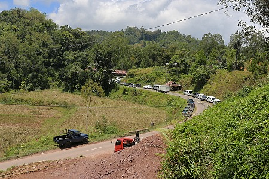
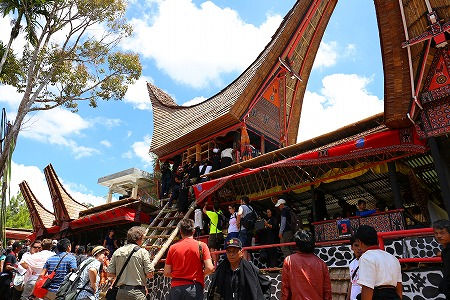

トラジャ族の葬式（前篇）/Funeral in Toraja
それは突然のことだった。
今日はどこ行こうかなー、と宿でぼんやりしていると突然
「今日は葬式があるぞ！」とバイタク兄貴からのお達しが。
よっしゃ、待ってましたぜ！とばかりに兄貴の後部シートに飛び乗った。
トラジャでは葬式が観光のハイライトになっているのでバイタクの運転手やガイド達は何処で葬式が行われるか常にアンテナを張っているのだ。
とはいえトラジャに来てから数日、中々葬式の知らせが届かず若干やきもきしていたのも事実。
基本的に夏が多いとは聞いていたのだが、こればっかりはどこかで葬式が行われるのを気長に待つしかないのである。
いよいよトラジャの葬式に立ち会えるぞ！
３０分以上走っただろうか。どの辺だか全然わからない田舎町に連れていかれた。
タンドゥンTandungとナンガラNanggalaの間にある村だという。
後で地図で確認したら
マランテの東に位置する小さな村だった。

とはいえ葬式会場に近づくと周辺にはバイクや車がたくさん停まっており、
フェスさながらに超盛り上がっているようだ。

遥か遠くまで車が路駐してある。
兄貴いわく、
大きな規模の葬式だという。
車道から斜面を登ると会場に着く。
バイクもかなり停まっている。
急な坂を登ると上の方からにぎやかな音楽や人の声が聞こえてきた。
まず最初に現れるトンコナンは臨時の売店になっていた。
食べ物や飲み物、たばこなどがたくさん売られている。
これらは参列者が自分で飲み食いするだけでなく、
葬家へのギフト売り場も兼ねている。
さらに進むと広場のような場所に出る。
広場を囲むようにトンコナンを模した参列者用の桟敷がずらりと並んでいた。
おおおお、凄い人数だ！
ざっと見たところ数千人はいるぞ。
見れば、結構観光客も多い。
我々が案内されたのは観光客ばっかりの桟敷席だった。
会場全体はこんな感じ。
広場の周りの桟敷棟は実際にはつながっており、一つの長〜い建物になっている。
親族なのか近親者なのか判らないが、女性たちが大量の食糧を運んでいる。
もちろん参列者に振る舞うのだ。
各桟敷には番号が付いている。
桟敷の番号は76番まであった。
１つの桟敷には100人ほどいたから、やはり数千人規模の参列者ということになる。
やがて桟敷棟に囲まれた広場の中央に青いシャツを着た男たちが集まってきた。
トラジャの伝統的な
葬送のダンスが始まる。
独特の節回しの歌に合わせて輪になった男たちが手を叩き足を鳴らして踊る。
葬式の進行はこの赤いジャケットの人が執り行っている。
式の要所要所で抑揚を付けて式自体を盛り上げているまさに
MC（マスターオブセレモニー）なのだ。
数十人の男たちによるダンスはたとえようもなくエキゾチックな気分になる。
何と言ったらいいのだろう、そんなに遠い国でもないのに物凄く価値観の違うところに来ちゃった感じ。
いや、曲やダンス自体が珍しいわけではないのだが、この妙に明るい葬式のあり方自体が
全く異なる死生観から成り立っているように思えるのだ。
ちなみにこの日が葬儀初日で、参列者は２日目の方が多いのだとか。
墓への納棺は４日目に行われるそうだ。
かように何日もかけて葬儀を行うのだ。
祭壇の前に神輿のように小さなトンコナンが運ばれてきた。
これまで幾度となく墓で見かけてきた棺桶を納めるための龕（がん）だ。
若い衆が会場の上座にあたる祭壇のようなところの前に龕を置いた。
やがてダンスを終えた男たちが戻ってきた。
あ、故人の顔写真がプリントされてるんだ…
このシャツ、葬式が終わったら普段着として着るんだろうか…。
次に若い衆が龕に集まってきて、おもむろに解体し始める。
一体何が起こるのかと思っていると、次々に龕を解体していき、中の棺桶が見えてきた。
棺桶はふたつあった。
夫婦一緒の葬式だったようだ。
手際よく龕を解体していく。
で、棺を取り出す。
ん？何をするのだ？
と思う間もなくもうひとつの棺も取り出す。
どうやらこちらが夫の棺らしい。
棺はどちらもティアドロップ型の断面の棺でトラジャでは一般的なカタチらしい。
そうこうしているうちに若い衆が祭壇の上に解体した龕の一部を持ち上げ始めた。
かなり急な竹の梯子を人海戦術で押し上げている。
若い衆の迫力に唖然としていると今度は
棺桶も運び上げているではないか！
大丈夫か？その急角度！ゴロンでびちゃー、てな事にはならないのか。
つまり、この葬式の主賓である故人を特等席に据えることで本格的に葬儀がはじまる、ということなのだろう。
大勢の若い衆が夫の棺を持ち上げている。
何なんだこの情熱、このパワー。
これは我々が思い描いている葬儀とは全く別のものだ。
ひたすらパワフルでひたすら熱い。
日本で言えば浅草の三社祭のような、モッシュ系の祭りに近い。
そうだ、
これは葬式という名の祭りなのだ！

無事、夫婦の棺が祭壇に納まった。
ここでMC赤ジャケが棺が無事納まったことを参列者に報告（多分）。
この後もガンガン盛り上がろうぜー！的な煽りMCをばんばん入れてくる。
コトバなんて判らないが、雰囲気で何となく判りますとも。
するとおもむろに白い布を纏ったおじさんがマイク片手に現れる。
恐らく宗教者か導師のような類の人で、呪文のような祝詞のようなコトバを発し続けている。
この後しばらくおじさんのワンマンショーが続き、場内も小康状態に入る。
先は長いので一旦インターバルをおきましょう。
続きはこちら！